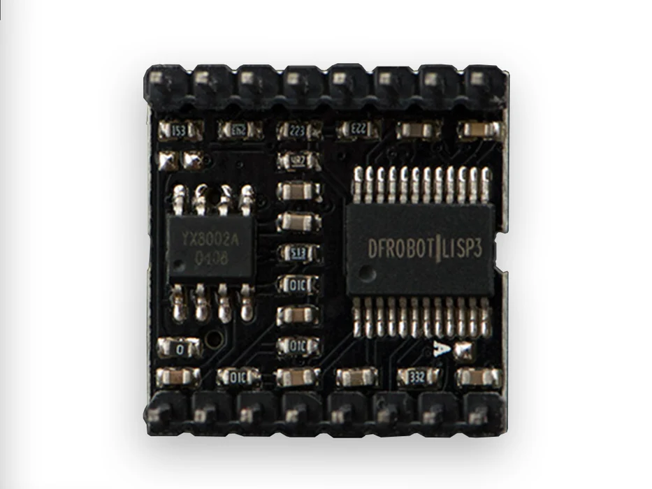

Hypercinema
Project 1 - Leaves Something Behind
Demo by Phoebe + Tochi + Yuyuan
Concept
This project started from one of our group members sharing a small habit she has had since childhood—looking for fallen leaves on the street, stepping on them, and enjoying the satisfying crunch.
We realized that stepping on fallen leaves is an experience many people share. When we talked about it, we naturally started thinking about our childhood selves and the simple joy of exploring ordinary things in everyday life.
At the same time, we started thinking about the life cycle of a leaf. A leaf grows, matures, and eventually falls from the tree. It seems like its life ends when it reaches the ground. However, when someone notices it, steps on it, and enjoys the crunchy sound it makes, that ending takes on a new meaning.
So, we decided to use fallen leaves as a symbol of the life cycle and invite people of
different ages to answer the same question:
"What would you like to say to your future self?"
Everyone is at a different point in their life, but everyone is also imagining a version of themselves they haven't reached yet. We record their answers and use them as sound samples that are triggered when people step on different leaves.
When someone steps on a fallen leaf that has already reached the end of its life, it makes a sound again. At the same time, a voice from a particular moment in someone's life is heard again.
Conceptual Decisions
Q1: Why did we choose to use human voices?
We wanted to use real human voices because a voice can carry something that text cannot， such as the person's presence, emotion, and personality.
I think of each leaf as having its own life. When a leaf eventually falls from the tree, in a way, it has completed its own journey. Maybe our lives are similar. We move through our own lives, and eventually, we leave something behind. Maybe a leaf can leave something behind in the place where it falls, just as we can leave something behind in the lives we live.
When someone steps on a leaf and hears another person's voice, they are encountering a small piece of someone else's life. We might be listening to someone else's story now, but perhaps one day, we will also become the person leaving a voice behind for someone else.
Q2: Why did we ask, "If you could give one piece of advice to your future self, what would it be?"
At first, we thought the question sounded a little strange. But we liked the idea because it makes people stop and think about where they are in their lives right now, and what they hope their future self will remember.
We also wanted to interview people from different age groups because we were curious about how the same question might change depending on where someone is in their life.
What became especially meaningful to us was hearing answers from people around our own age. Their answers could be especially touching because we are going through a similar stage of life. Their uncertainty, hopes, and thoughts about the future can feel very familiar to us.
So although the question is directed toward the future self, the answer actually reveals something about the present self. What we care about right now, what we are worried about, and what we hope to leave behind.
Voices We Collected
Age 03-10
Age 20-30
Age 30-40
Age 40-50
Age 50-80
Technical Test
We used a pressure sensor and a buzzer to prototype the triggering mechanism. When pressure is detected, the system triggers a sound.
int lastSensorState1 = 0; // sensor's previous state
int lastSensorState2 = 0;
int threshold = 30; // threshold controls the amount of pressure required to trigger the reaction.
void loop() {
int sensorState = analogRead(A0); // read the sensor:
int sensorState2 = analogRead(A2);
if (sensorState1 >= threshold){ // If the current value is above the threshold
if (lastSensorState1 < threshold) { // and the previous value was below it
Serial.println("Sensor 1 crossed the threshold");
tone(9, 440); // trigger the sound
delay(100);
}
noTone(9);
}
...
lastSensorState1 = sensorState1; // save each sensor's current state
lastSensorState2 = sensorState2;
delay(10);
}
Future Work
The speaker setup we used for this prototype can only generate simple tones and cannot
play our recorded audio files.
For the final installation, we would need an additional audio playback module, such as a
DFPlayer Mini, together with a microSD card and speaker, to store and play the recorded
voices.
